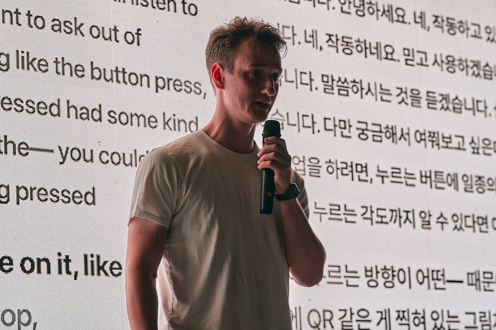
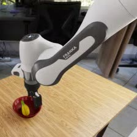
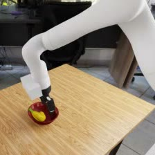
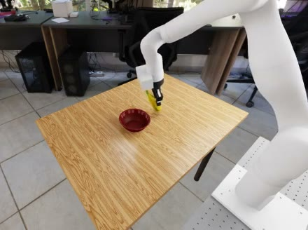
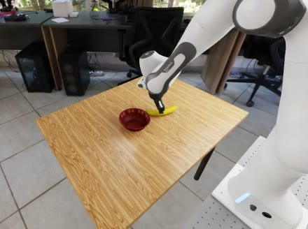
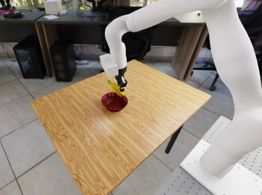
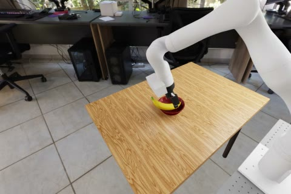
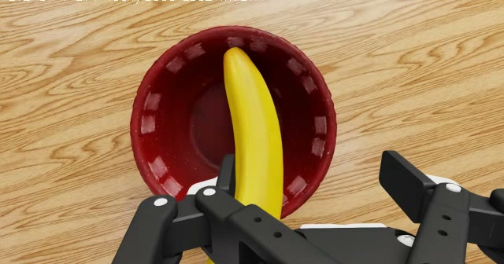
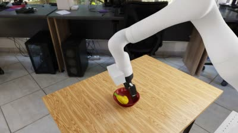
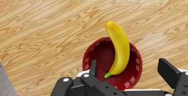

Bridge only
Without painting, these three runs never completed a grasp and placement.
Robot B · actual exterior view · 12×A robot can learn a task, but what happens when we want a different robot to do it? I explored that question with two simulated arms: a Franka (Robot A) and a Kinova (Robot B). I wanted to transfer both an existing task and, eventually, improvements learned through further training.
Pick up a banana and place it on or in a bowl. NVIDIA’s GR00T policy—here, the neural network that turns camera views and robot state into actions—was trained for the Franka. The challenge was to make it work on the differently shaped Kinova without training it on Kinova recordings.
I proposed a fixed adapter: rules between the policy and Robot B that translate observations and actions, with nothing in those rules learned.
The experiment follows three steps: build an adapter, test the original policy on both arms, then train it further on Robot A and evaluate what changes on both robots.
Nebius × NVIDIA Global AI Hackathon · Physical AI track · October 2026 · solo learning project · simulation only
If one trained policy could drive many different arms, the expensive part, the training, would only have to happen once. A few things that could lead to:

At the Seoul kickoff, Dhruv talked about training a policy on one robot. My head went straight to: ok, what if we want to use it on another one? That’s cross-embodiment policy transfer, and an adapter seemed like the answer. When I said that to him, he snapped his fingers and shook my hand. So I knew I was onto something.
The idea didn’t come out of nowhere. Days earlier, a business owner told me about a product that solved the problem for one system but needed an adapter for the others. And adapters are how I’d been thinking about MCPs and deterministic LLM workflows, the way you get reliable outputs. Then here was the same word, used for robots.
I presented the idea and took Dhruv’s questions in front of the whole room (that’s the photo). I figured my instincts could lead somewhere interesting, or at least to a great learning experience in the time the hackathon gave me.
Photo: Bloom, from “Physical AI Will Be This Year’s Christmas Gift”
Both arms have seven joints, but they’re shaped differently and move differently. Their grippers behave differently too: in this simulator, B’s takes 23 control steps to close, where A’s takes 2.
The policy is NVIDIA’s GR00T N1.7, in the version trained on DROID [3], a large set of Franka recordings.
Everything ran in NVIDIA’s Isaac Sim, in RoboLab’s banana-and-bowl scene [4, 5].


P0Original policyGR00T exactly as NVIDIA released it [2].
more training on Robot A
P1Fine-tunedP0 after that training. Robot B gave it no data.
The adapter translates between the policy and Robot B. It’s fixed rules with nothing trained, in three parts:



The policy also reads the arm’s joint angles, and the bridge hands it the Franka version of those too, so the numbers match the picture. Every 8 moves, the loop runs again.
GR00T N1.7, DROID checkpoint. P0 as released; P1 fine-tuned on Franka wins.
Takes an exterior image, a wrist image, Franka joint and gripper state and the instruction; returns Franka joint targets and a gripper command, replanning every 8 actions.
7 joints, Robotiq 2F-85 gripper, in Isaac Sim 5.1 and Isaac Lab 2.3.2 on RoboLab’s banana-in-bowl task.
RoboLab’s functional model of the arm, not a calibrated twin of a physical one.
Fixed, rule-based adapter · frozen before testing · no trained weights
Development recordings, before the frozen test. Choose a scene to compare the first two stages; the lift was tried once. These clips show the progression, not a controlled proof of each change.
Without painting, these three runs never completed a grasp and placement.
Robot B · actual exterior view · 12×All three reached the bowl, but lost the banana before the open command.
Robot B · actual exterior view · 12×One development run: the gripper opens while holding the banana, which settles in the bowl.
Layout 2002 · seed 0 · only recorded lift trialRobot B · actual exterior view · 6×A rendering copy of the Franka keeps its colliders, so it stays parked 20 m above the cell whenever physics advances. Before each policy request it is moved to the Franka’s base position and posed at the virtual joints. The Kinova’s visuals are hidden, the exterior camera renders, and the scene is restored. This is ground-truth-assisted simulator rendering, not image inpainting, so the policy also sees whatever the Kinova would hide. A real robot would need Mirage’s mask-and-inpaint step [1], which this project does not test.
In these simulator assets, the Franka’s gripper reaches 95% closure in 2 control steps and the Kinova’s in 23. Holding each policy action for 12 steps gives the slower gripper time to close. The cost is pace: a Kinova episode may run 600 s of simulation where the Franka gets 50 s for the same 750 policy actions.
Once the policy has held a close command for more than 24 control steps, on a grasp that began with the banana touching neither the bowl nor inside it, the adapter raises the commanded hand 15 mm over 24 steps and lowers it again when the policy opens. That eligibility check uses privileged simulator information: banana–bowl contact and the simulator’s geometric in-bowl test, both from the previous control step. A real Kinova would need its own sensing for both. The lift is a fixed rule, not learned; it was tuned on one development scene and tested once before the freeze.
A matched check held robot state fixed and swapped one input at a time. Its predeclared tilt measure was negative. An exploratory analysis instead found that changing the exterior image moved the 8-step target by 19–116 mm, compared with 4–12 mm repeat noise; changing the wrist image or mapped state stayed within that range. With painting, the target discrepancy was 7.11 mm, against 6.38 mm repeat noise and 74.38 mm unpainted. These checks motivated the intervention; they do not establish that appearance explains every failure.
With the bridge, cross-painting and lift now in place, this is Robot B carrying out the task. The two views below show the same simulated Kinova run: the outside camera and the image supplied to the policy. The latter replaces the Kinova with a Franka; it does not change the physical robot.
This is the original policy, P0, on test layout 4003. Next, I compare all twelve test layouts on both arms.
With the adapter frozen, I ran the original policy, P0, on 12 layouts it had never seen. A layout is one starting arrangement of the banana and bowl. The same 12 on Robot A and Robot B.
A win means a real release: the robot lets go on purpose, and the banana comes to rest in the bowl. A scoring script, the scorer, judges every run by that rule.
This confirms the first part of my hypothesis: through the fixed adapter, the Franka policy works on the Kinova.
B matched A: 7 wins each! The adapter working was a great moment of relief. They didn’t win on the same layouts, though: only three were wins for both.
Robot A, the Franka the policy was trained for, from grasp to win in real time. It sees itself, so nothing is painted.
Robot B through the adapter, from grasp to win at 6× speed: holding each action for 12 steps makes B much slower. The policy saw the painted image. In five of them it later picked the banana back up; the win counts the first time it came to rest.
The rule was written after earlier traces had been seen. Its parent rule, v5, agrees with all 21 earlier reviewed verdicts, against 17 of 21 for the older v4 gate; that is consistency, not held-out accuracy. The live v4 gate, which also ends each episode on success, is reported beside it. v4 credits an open only when the banana is already inside the bowl’s volume, so it rejects drops from a few centimetres above the rim.
Before fine-tuning and in checkpoint selection, every v5.1 pass and every flagged fail went to an independent AI reviewer, a Claude agent working from videos, frames and traces under declared rules. It knew whether each episode was a scorer pass or a flagged fail. After fine-tuning, Codex reviewers judged all 24 P1 runs from sampled video frames and event traces, not blinded and not from continuous playback. Their counts are reported next to the locked headline, never pooled with it.
| Robot, policy | Locked headlinev5.1 first rest, Wilson 95% | AI reviewer | Live v4 gate | Safety aborts |
|---|---|---|---|---|
| Franka, P0 | 7/120.32–0.81 | 8/12 | 4/12 | —no limit check |
| Kinova via adapter, P0 | 7/120.32–0.81 | 7/12 | 1/12 | 4 |
| Robot, policy | Locked headlinev5.1 first rest, Wilson 95% | AI reviewer | Live v4 gate | Safety aborts |
|---|---|---|---|---|
| Franka, P1 | 2/120.05–0.45 | 3/12 | 1/12 | —no limit check |
| Kinova via adapter, P1 | 0/120.00–0.24 | 1/12 | 0/12 | 3 |
Four of the Kinova’s twelve episodes ended on a safety abort. Three (4004, 4005, 4007) were failed IK solves in the adapter’s action map, all with one mechanism: joint 6, a wrist joint, pinned at its lower bound of −2.09 rad with small residuals. That is the solver stuck at a joint limit, not an unreachable target. The fourth, 4006, left a soft joint limit after it had already won. Aborts are task outcomes, scored on the saved partial trace and kept in ΔB, so 4006 counts as a win and the other three as fails. The Franka has no target-limit check, so a target that ends a Kinova episode would not end a Franka one. The completed P1 half had three IK aborts (4000, 4010 and 4011), all retained as failures; the consecutive-abort stop rule did not halt the batch.
Now the second part of my hypothesis. If the policy learns more on Robot A, does Robot B get better too? B gave no training data, and the adapter stayed frozen.
I ran P0 on 32 practice layouts, kept its 27 wins as training demos and fine-tuned it on them once, about 23 minutes of GPU time. Training saved four snapshots of the policy along the way, and the first warning came early: on 8 separate practice layouts, none of them beat P0. The best one became P1 anyway. Then the same 12 test layouts.
A kept 2 of its 7 wins. B kept none.
Robot A Franka
Robot B Kinova, via the adapter
wina win lost after trainingno win
Each dot is one test layout, 4000 to 4011, in the same order on every row.
So did B get better? No. P1 got worse on both robots, so there was no improvement on A to carry over to B.
P1 is P0 fine-tuned on 27 Franka wins approved by the reviewer (it kept 5 other scorer wins out of training), 6,367 frames from 32 practice layouts over two policy seeds. A layout won under both seeds appears twice, and a winning episode keeps its failed sub-attempts. Fine-tuning ran 2,000 steps at batch 32 and learning rate 1e-4 on the projector and diffusion head. The locked selection rule ran P0 and the checkpoints saved at 500, 1,000, 1,500 and 2,000 steps on 8 validation layouts (3000–3007). After the reviewer’s adjudication they won 6, 0, 1, 3 and 3 of 8. No fine-tuned checkpoint beat P0. The rule takes the most wins, ties to the earlier checkpoint, so P1 is checkpoint 1,500, labelled “P1, no A-validation improvement”: the selected fine-tuned checkpoint, not an improved policy. Its 3 of 8 is selection-biased. The after test completed; all 24 P1 episodes and two P0 canaries were copied and verified locally.
| Pre-registered comparison | Δ, layoutsP1 − P0 | DiscordantP1 only / P0 only | Exact McNemar p |
|---|---|---|---|
| ΔA, Franka | −5 | 0 / 5 | 0.0625 |
| ΔB, Kinova | −7 | 0 / 7 | 0.01562 |
Two-sided exact McNemar over the paired layouts. P0 won 7 of 12 on each robot, so P1 can gain at most 5 layouts; 5 to 0 gives p = 0.0625, and only a decline can reach p < 0.05. The after test ran in a separate session from the before test; checks included full pins and a rerun of Franka P0 on layouts 4000–4001, which gave 0/2 v5.1 wins, matching the before half layout by layout. All 12 pairs per robot were scored. The canary trajectories differed, so matching failure outcomes do not rule out drift. A later CPU replay of the locked scorer over all 48 saved before and after episodes reproduced every verdict, with matching scorer and trace hashes, so the automated grading was the same before and after.
P1 still got the banana to the bowl. What it lost was letting go on purpose.
Robot B, runs out of 12
8P0→8P1
Yes, just as often. Resting on the bowl for 1 s or more, rim included, released or not.
Robot A, runs out of 12
3P0→6P1
Twice as often. A lifted banana slipped out of the closed gripper.
The 27 training demos
2of 27
Barely. In only 2 of the 27 demos did the gripper opening ever land in the 8 actions the robot actually runs.
the 8 the robot runsthe other 32: only the plan
The policy plans 40 actions ahead, but the robot only runs the first 8, then asks again. So those first 8 are what training most needs to get right. Training learns from 40-action slices of each recording, and my data loader only cut complete slices. So no slice could start in the last 39 actions of a recording, which is right where the release happens. In 25 of the 27 demos, the gripper opening never landed in the first 8 actions of any slice.
My hypothesis: the sampling gap may have contributed to P1’s release failures. A candidate sampling change brings that coverage to 27 of 27 demos, but I ran out of time and credit before I could retrain with it. The cause is not established, and this is not a proven repair.
By this point I was down to about $2 of GPU credit, with the deadline close. I topped up $3: enough for one more Kinova run, not another training round.
Then I noticed something. Rewatching the last P1 clips, I saw Robot B carry the banana over the bowl on layout 4003 and just hover there, ready to let go, for almost a minute. It never let go. I checked more footage myself to be sure.


So carrying wasn’t the problem. Letting go was. What if Nemotron got the right camera views, at the right moment, and the power to make that one call instead of the policy?
That’s ABBA. Nemotron 3.5 Super VL, running on Nebius Token Factory, watched Robot B’s outside and wrist cameras while the gripper was closed. It said WAIT 27 times. Then it said READY, and the arm held still. It looked again at fresh views, confirmed, and the gripper opened.
Nemotron never drives the robot. P1 does all the moving, the whole run. Nemotron overrides it at one moment only, the release: when it says READY the controller freezes the arm, and when it confirms, the controller opens the gripper and keeps it open, whatever P1 wants to do.
The earlier unassisted B/P1 run on layout 4003 reached bowl support through a slip and failed the controlled-release criterion. In the separate ABBA run, Nemotron triggered a commanded release that passed the unchanged scorer. This demonstrates the assisted-release mechanism once; it does not establish a repeatable improvement or isolate Nemotron’s contribution from the controller’s hold and latched-open behavior.
When I saw the footage that it worked, I was super stoked. 29 Nemotron calls, $0.0223 in total.
I wish I’d had time for a sturdier way to tell when the banana is over the bowl, like a QR code on the bowl, or depth sensing. I’d brought that up with Dhruv during my Seoul presentation, and a depth version was built and tested locally, but there was no credit left to run it, and truly no time to get it to a level I’d be happy with.
Layout 4003 was picked, not drawn: it was the only P1 Kinova run with a long, centred carry over the bowl.
How it ran. The Kinova ran P1 through the unchanged painted adapter on layout 4003, policy seed 0, for 3,600 controls (240 simulated seconds). While the gripper was closed, Nemotron looked at the Kinova’s real exterior camera and its wrist camera; the simulation paused for each call, and P1 kept acting between checks. Counting the runner’s ticks from 0, it said WAIT 27 times, every 12 ticks from the first gripper close at tick 672 to tick 984. At tick 996 it said READY and the controller held the arm. At tick 1005 it confirmed READY from fresh views, and the open command executed at control 1006; the controller kept the gripper open from then on. The 29 calls cost $0.0223 from returned token counts, with 56.5 s of model wait.
The unchanged v5.1 scorer, the rule behind every result above, scores a PASS at control 1071, with the banana still on the bowl at the end. At the open, the banana’s root was 4.98 cm from the bowl centre, measured horizontally, and its centre 10.5 cm above the bowl top; Nemotron never saw these evaluation-only numbers. The runner’s older live v4 checker reported no success: it ruled the open ineligible. v5.1 stays the primary rule because the before and after results were scored with it.
Why a vision check first. Instead of the intent demo’s robot run (see “Before ABBA”, below), I proposed DROP: a Nemotron vision model watching P1 carry the banana on the Kinova and deciding when to let go. The vision model, Nemotron 3.5 Super VL, had named the banana and the bowl in 12 of 12 start frames, an easy test with only two objects on the table. On saved frames from the P1 Kinova runs, it passed a small screen of held, approaching and already-resting cases after two failed prompt rounds, but near the rim it still said “ready to release” in 4 of 4 cases with the banana 5–8 cm off the bowl’s centre and 2 of 4 at 8–12 cm (69 calls, $0.0522). That was not selective enough to trust with the gripper on its own.
Before launch, the package had 43 CPU tests and an implementer review, but no independent review of the final runner. Afterward, an independent AI review re-hashed all 298 copied evidence files, reproduced the frozen score and checked the cost ledger. The RGB-D capture and intent-control robot experiments never ran. Across all Nemotron experiments, 439 calls totalled $0.1441 at prices applied to returned token counts; this is not a provider billing receipt.
Nemotron’s job here is to turn a plain request into a
structured task spec a program can check. NVIDIA Nemotron 3.5
Lightning (nvidia/Nemotron-3_5-Lightning) on Nebius
Token Factory takes a request such as “put the fruit
away” and returns the object and the target, named from the
scene’s own objects, where the object should end up, and the
conditions a success has to meet, such as whether the gripper must
be opened on purpose and whether the bowl’s rim counts.
The parsing ran; the robot run did not. The spec also carries the one sentence the robot’s policy should get and whether this robot should try at all, and a fixed local rule has to agree before anything moves. Each request was asked three times, and the robot would only get an answer given every time. With my first prompt, Nemotron declined “put the fruit away” as naming an object not in the scene, refused to move the bowl as expected, and its three repeats split on “put the banana beside the bowl, on its left”. A second prompt, written after seeing those answers and disclosed as such, gave the same answer on all three repeats of all three requests. The planned run of the unchanged policy (P0) on the Franka with those specs was never performed; 87 offline tests are all the checking it got.
An earlier version of the compile step, the intent contract, was tested on its own: 11 instructions, three runs each, from RoboLab’s own wording and paraphrases to five adversarial ones. On the adversarial five, all 42 field checks matched a faithful reading: “the apple” came back as not in the scene, “don’t let go of it” turned off the release requirement, and “the edge of the bowl” became the rim. It also exposed a real gap: it read “in the bowl” literally, so the rim didn’t count in any of the 18 runs on the six ordinary instructions, while the project’s win rule counts it.
Is a bigger model better here? Not on this test. I sent the same 11 instructions, five of them traps like “put the banana in the bowl but don’t let go of it”, three times each to four Nemotron models on Token Factory, with the rule for picking a winner written down before the first call. Lightning, Super (120B) and Ultra (550B) got every trap right and gave the same answer on every repeat; Nano ignored “don’t let go” all three times. On a tie the cheapest wins, so Lightning stays: 33 calls for a fifth of a cent. Five traps can’t tell the top three apart, so this doesn’t show the bigger models are no better on harder requests.
I also tried using Nemotron to grade runs from their text logs; on 24 runs it did no better than always guessing “success”, so the locked scorer and an independent reviewer do the grading. The 178 Nemotron calls before the comparison cost $0.02, per the Token Factory usage page.
Nemotron’s second job, deciding when the Kinova lets go, did reach the robot: that’s ABBA, above.


This is one small experiment. Everything ran in simulation: 12 test layouts per robot, one training run, one ABBA run. Painting and the lift use simulator information a real robot wouldn’t have. So it doesn’t show the adapter working on a real robot, that fine-tuning can’t help, or that ABBA works every time.
With more time, or more Nebius credits, I’d have loved to explore this further and come back with results you can actually rely on.
Honestly? Start again from scratch, with everything I learned. I figured this out as I went, and that wasn’t efficient or accurate.
Two things pushed it that way. Time and money: with the deadline close and the credits running out, there was never room to stop and redo things properly. My agents: Claude and Codex, the AI coding tools I worked with. To make the deadline, they did most of the hands-on work in the second half, and while I directed them at every step, I don’t know the ins and outs the way I’d like to.
For real research I’d do much more of it myself: dig into the adapter and other adapter methods, understand every piece, and solve the problem the way I think it should be solved. The open threads from this round come with me: test the proposed training-data sampling repair, and repeat ABBA across many layouts.
There was a bigger plan too, and it never got started. We ran out of resources and time. The idea was to keep P1 fixed and train one shared adapter, a learned one this time, on Robot B and three more arms, C, D and E, then test it on three arms it never practised on, F, G and H. Does an adapter learn something that carries over to robots it has never seen?
It stays in simulation for now. I asked about my university’s Kinova arms, the exact model I’d need, but they’re booked for coursework while the course runs.
This was my first hands-on project in machine learning and robotics. I started on 4 October with this notebook, and page one was a list of “What is…?” questions. I did the setup myself, step by step, until the commands and ideas made sense.
Arrow keys turn the pages.
Transcribed by Claude from my handwriting; may contain errors.
My biggest lesson was how much research and planning goes into robot learning before training even starts. This project made me want to pursue a career in robotics and machine learning. I’d love the opportunity to keep working on this problem.
The “What is…?” questions on page one, I understand better now. But I didn’t know yet what there was to learn. Roughly, it turned out to be this:
The first policy I trained was far too simple: move the hand to a target, no banana, no grasp. It proved the setup worked. On 21 October I switched to the banana-and-bowl task and GR00T N1.7.
My notes stop around 21 October. As the deadline got closer, I moved from doing every setup step myself to directing Claude and Codex, watching the results and deciding what to try next.
Compute: GR00T N1.7 and Isaac Sim ran on a Nebius AI Cloud VM with one NVIDIA RTX PRO 6000 Blackwell. NVIDIA Nemotron 3.5 Lightning handled task specifications; Nemotron 3.5 Super VL handled saved-frame vision checks and ABBA, both through Nebius Token Factory. Simulation footage is from this project’s own runs.
This is my solo project. I chose the direction, watched the footage, shaped the experiments and made the scope and budget decisions. I used Claude and Codex for research assistance, implementation, experiment operation, analysis, drafting and review. From around 21 October they did much of the implementation under my direction. Reviewers named in the results are separate AI agents, not human experts; their findings and the locked scores remain distinct. The technical report records the detailed provenance. No institutional affiliation or sponsorship is claimed.
Thank you to NVIDIA, Nebius, Tavily, and Bloom Korea for the opportunity to participate. Dhruv Diddi’s Seoul kickoff presentation introduced the robot-transfer problem that inspired this project.